What is design?
We are a team of designers, researchers, prototypers, content writers, and engineers. Design is how we—through the process of creativity, research, intuition, iteration, experience, storytelling, and the recognition of need—plan and subsequently create useful, functional, smart, and delightful products and experiences.
How we design
We create living solutions that are ever-evolving. Instead of dwelling in complacency, we dream bigger, aim higher, and demand better. We partner our thoughtful and considerate design with research, data, and metrics to grow a deeper and more empathetic relationship with the billions of people across our networks.
Why is design important?
We make our first impression through design. A purposefully crafted and well-designed experience is the handshake and welcome that assures our users that we value them and are proactively thinking of their needs. Design thinking brings engineering, business, product, marketing, and design together to connect with the people who use our products while targeting and addressing business goals. By having design excellence as a goal at Oath, we are improving the end-to-end experiences we present to our users.
What we value
Designing products is the act of making choices and decisions. We know whether or not those decisions fit within a fundamental orientation of our team's point of view by having a defined philosophy on what we believe our design to be.
When designing products, these design values help guide us into appropriate choices.
1. We design cohesive experiences, until we don't
A successful product is a combination elements, colors, interactions, animations, buttons, and hundreds of other pieces that all feel at home together. By helping a user feel at home in our world, we create an experience that allows them to move in and out of features in an effortless fashion. The easiest and quickest way to on-board a user into successfully using Feature X is to use patterns and behaviors that they have learned from using Feature Y.
But, a product that becomes overly focused on consistency and identical elements and patterns can become stagnant and lost. It's a line you realize you've crossed when you cross it. Relying on a dogmatic ideology of consistency is a crutch. Designing inside of a system that doesn't allow for inconsistencies in its system leads to paralysis, and inside of that paralysis our ideas begin to atrophy.
Working on a cohesive system that knows it must live inside a world where design is a family of related solutions allows us to build features made from blocks that users find familiar and appropriate for their location.
2. We use validated building blocks
As a designer, making new experiences is fun. You are able to stretch your muscles and try new things, and while a new experience can be fun for us to make, it's a job for a user. We've just tasked them with trying to figure out what they have been presented with.
Successful design takes into account the challenges that we are presenting our users and tries to balance that with the cost-benefit of their having to learn a new system. If we have established patterns or paradigms and we purposefully choose to ignore them, we have presented our users with unnecessary hurdles.
The assembly of divergent UI elements that are close but not the same for no real reason will lead to confusion and frustration. The best way to on-board a user in how to use a feature is to pull from their past experiences and current expectations.
3. Design is iterative, because no feature or product is ever truly final
All solutions have lifespans. Knowing this helps us to be okay the process of polish or throwing away something complete and starting from scratch. But this doesn't give us license to freely change designs. We iterate and explore with the user in mind.
Iteration taken too far can throw away learned behaviors. If we aren't careful, we can iterate our product into a completely new and unbalanced experience. We must remain aware of when to iterate, when to wait, and when to throw out the iteration because it doesn't work better than the original. Iterating is not a shortcut to customer success, nor is it magic. We iterate to find better solutions to problems, but we avoid the hyper-focus on the micro in order to maintain perspective on the macro. Unwieldy iteration leads to a mixing of elements that when viewed together, don't fit.
4. We work to understand the problem we are solving and the value that a solution brings to our users
We are aiming for a deep understanding of the needs of our users, and the problems they encounter. By understanding a problem we get an understanding of the product, the current flow, and what the end-to-end experience is for the user.
By falling in love with the problem, we will never become hung up on a specific solution.
5. Profits for advertisers should not disrupt our user's needs
Just as we don't ignore the needs of our users, we don't ignore the needs of those placing ads in our products. Both are our customers, and we can't ignore a customer's problem.
Commonly, those who use a product for free are referenced as the actual product, with the advertisers being the paying customers. Our desire is not to sell a user base, but to create features in a way that brings equal value to both users and advertisers. We make more friends and build more trust by creating a product with symbiotic value.
6. We make products that we value ourselves
If we aren't shipping products that we are proud of, then we aren't doing our jobs in a way that is fulfilling or valuable to ourselves. We're part of the equation, and how we feel about what we make will be evident to our users.
7. We value experiences that are accessible to all
We have a wide user base, and we desire to create a product that everyone can use, regardless of their situation.
What is good design?
As we design and iterate on features and products, it's important to define what a successful outcome is.
Remembering to continually ask ourselves these questions while you design will help us to solidify them into our thinking and help us deliver consistently.
- Is it meeting a demand for a specific problem?
- Are there clearly defined metrics that we are designing against?
- Is it reinventing low-leverage building blocks that don't need to be reinvented?
- Is it consistent with itself?
- Is it consistent with things around it?
- Is it consistent with Yahoo (Fuji) as a whole?
- Is it moving the product forward?
After we launch, and have gathered feedback, a list of additional questions can be answered to validate our solution:
- Did we meet, exceed, or fall short of the target metrics?
- As a piece of a larger puzzle, does this fit in with, and enhance the existing product and solutions inside it?
- What would/could/should we change?
If we can successfully answer these questions, we're going to be pushing out great products and solutions. And if we fall short of that goal, we will have set ourselves up to figure out quickly what we've learned and where we should move towards.
How we communicate
Knowing what each other is working on will allow us to deliver high-quality work, share insights, and remove overlapping tasks. The constant and scheduled communication with help us to build and share institutional knowledge of what Mail, who we are building it for, and what needs they want met.
Weekly stand-up
We have simple, weekly design stand-ups formatted in the following fashion:
- Designate a note-taker for the meeting, will be on a rotation
- Each person shares what they worked on last week, for a maximum of 5 minutes
- If, as a group, we touch upon something that needs more in-depth exploration, we will schedule a dedicated meeting for us to discuss it as a team
- The next person begins
In-depth feature review
When showcasing a feature, it's important to meet and gather feedback in a way that is productive and beneficial. These meetings are comprised of 3 distinct roles: the presenter, the note taker, and the participants.
As the presenter
- Before showing any designs, tell everyone what you're presenting, with a maximum of 2 features to review
- Give a concise summary of the problem you're solving and the solution you're aiming to deliver
- Clearly state the level of feedback you're looking to gather
- Ask someone to be a dedicated note-taker for the meeting
- Present the solution
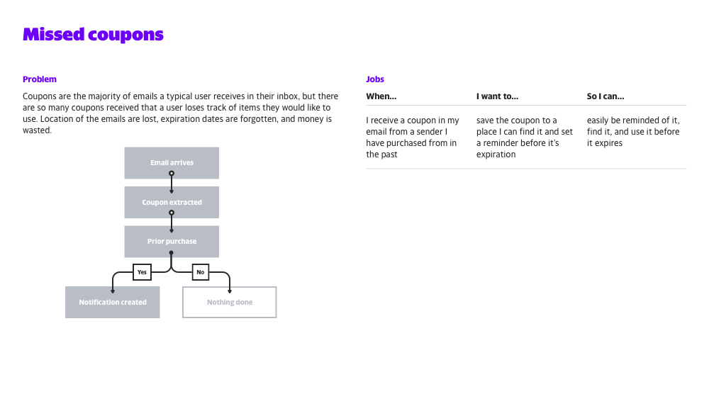
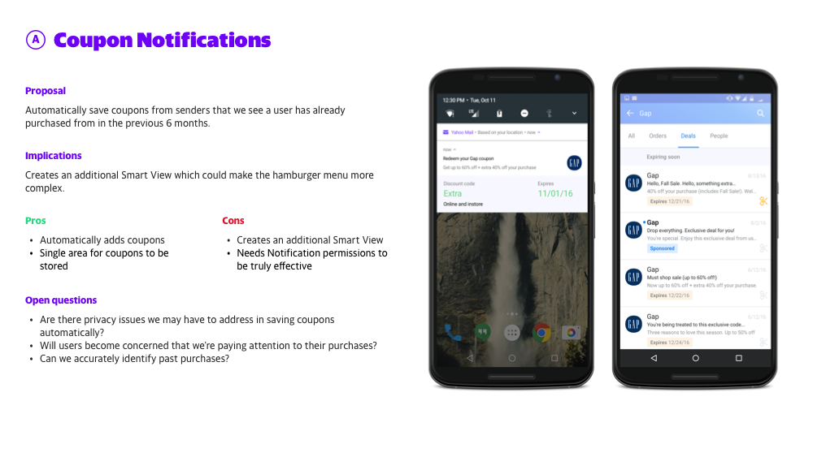
Defining your feature in the terms of a Job Story, can help you clearly articulate your problem and proposed solution.
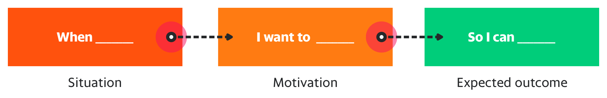
Tips for writing a Job Story
Designing features using Job Stories
5 Tips For Writing A Job Story
Your Job Story Needs A Struggling Moment
Use Job Stories to Hook Users
This will help you alleviate the ambiguities and assumptions commonly found in a User Story. Personas are fundamentally made up, not real, and full of prejudices.
If needed, provide a clear visual example of how the feature lives inside of the larger system.
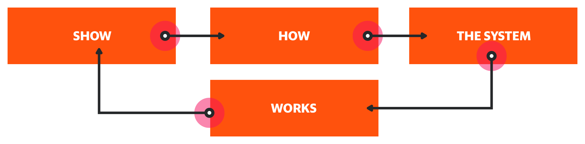
As the note taker
It is the primary job of the note-taker take document as well as possible the review, with focus on points of feedback and actionable next steps. Feedback and questions can still be address by the note taker, but the objectivity and documentation brought by a focus on note-taking can be more valuable.
Following the meeting, notes are gathered by the presenter from the note-taker and distributed, along with any media that was used to present the product or feature, and emailed to all in attendance. For further documentation, a Google Document is created to hold notes, images, links, and the continued conversation around the feature.
Notes from all in-depth meetings are saved to Docs folder inside of the main Mail folder.
Example:
Mail / Docs / Features / Growth / Inbox customization.gdoc
As a participant
- Aim to ask question as they will help verify choices and allow the presenter to open up inside the assumptions they have made
- Make sure your underlying assumptions are addressed
- Refrain from offering opinions at first
- Be sure to address specific pieces of the design, with the goal being the creation of actionable points
- Leave the meeting on-time
How we build
Folder structure
Products are organized in Google Drive in a way that allows for work to be easily found by teammates and for an easy cataloging of progress. Work is divided by platform, feature, and finally sub-feature. Folders are set in "Sentence case" and follow a similar hierarchical structure to help keep us all organized and consistent.
Example:
Mobile / Message list / iOS
Norrin / Message list
Each feature has a similar set of starting folders as well:
"_ archive"
"_ documents"
"_ mocks"
"_ archive" folder
This is exactly what you think it is. If you want to save it but don't need access to it, place it here.
"_ documents" folder
Place Google Docs here. This does two things: it makes connected documents easily accessible, and it shares them to the entire team without having to invite them directly to every document needed for that feature.
"_ mocks" folder
Flat PNGs live here, placed into a folder for each sub-feature. Dated folders yyyy-mmdd will keep things organized and keep a historical record.
Example:
_ mocks / Contacts / Contact card / iOS / 2017-0810
File structure
All file names are Sentence case, and in any instance where spaces aren't allow, a dash(-) should be used in lieu of a space.
A Sketch file should exist for each feature, on each platform. Each feature file should contain past, present, and future versions of the feature. Wireframes for a feature are included in the same file as the working design.
If sub-features become too noisy, they can be broken out into a separate file and saved along side the main feature file.
Pages
Sketch Pages control and organize versioning and potentially, sub-features. All archived artboards and elements should reside on an "Archive" Sketch Page. If multiple sub-features are included in a file, the sub-feature name should be set up as an index separator that proceeds the versioned pages that follow.
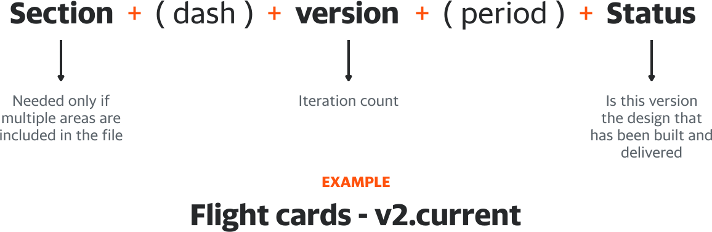
Example page set:
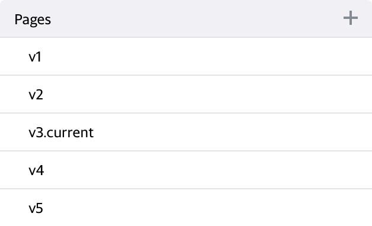
Example sub-feature set:
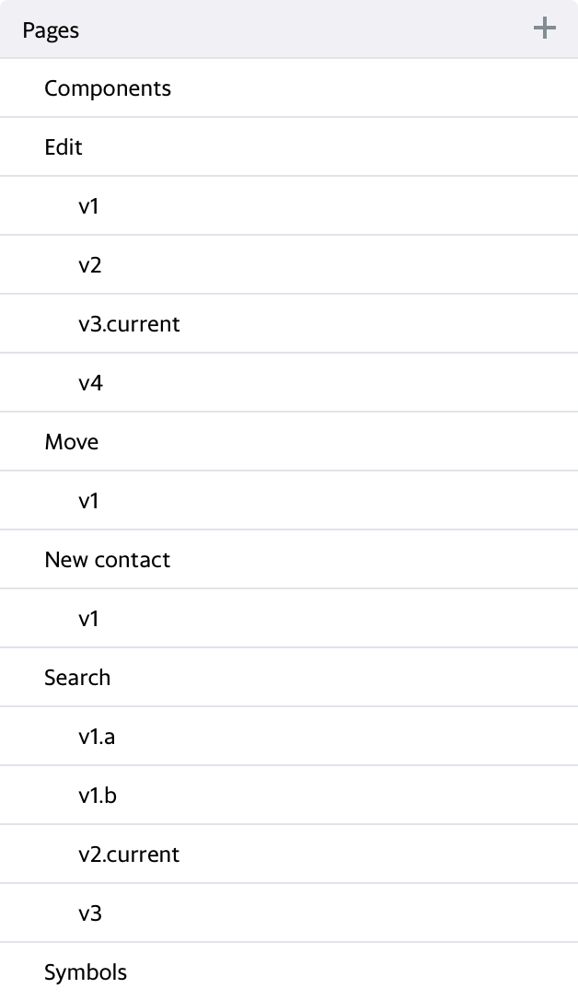
Artboards
Inside of our Sketch Page, our Artboards should read and function in left-to-right, top-to-bottom order and be properly named using the Artboard Tricks plugin. Using the Artboard Tricks plugin will do two things: arrange our Artboards in a grid and prefix Artboard names with a number series. This will help keep file exports in order, and allow for easily identifiable entities to share.
Horizontally aligned Artboards should be considered a unique flow or grouping. Each new Artboard row should relate to the Feature the file is designing, but should be a logically new grouping.
Example
Layers and Layer groups
We name our Layers and our Layer Groups, period. Common sense, above everything else, should be applied when doing so. If it's a default name that Sketch has given a Layer or Layer Group, it's incorrect. Layers and Layer Groups in the Layer List, should be arranged to reflect the logical grouping and build of the page elements we're building. As the page design works it's way from the top of the view downward, the Layer List elements should mirror that order.
Symbols
If an element is repeated throughout a page, feature, or product, it should be a symbol, and to save work for everyone, we share and collaborate on pieces of our app through the native Sketch Library feature. Changes to individual Library symbols and components should be done with a large amount of caution and a tremendous amount of communication.
Locations
Android: Mail / Sketch Libraries / Mail for Android.sketch
iOS: Mail / Sketch Libraries / Mail for iOS.sketch
Norrin: Mail / Sketch Libraries / Norrin.sketch
To keep your files clean and free from possible redundancies, we use Sketch Libraries, Merge duplicate symbols plugin, and the Library Symbol Replacer to replace local symbols with symbols from the shared Sketch Library.
To get access to the Symbols Library, you will need to load it directly into Sketch through the Preferences Pane:
- Click on the 5th icon along the top will let you add library files
- Click the "Add Library..." button in the bottomleft
- Navigate to your local Google Drive folder
- Navigate to
Comms Design > Mail > Resources > Sketch Libraries
Color
We use Fuji colors universally and consistently. If it's not Fuji, don't use it. If it's close to Fuji but not an exact Fuji color, change it to the closest Fuji color available. We can import Fuji colors directly in to the Global palette in Sketch so there is no real reason to not have the exact color needed. The Sketch Palettes plugin will import the Fuji Palette file. When importing, choose to save these colors to your Global palette and you'll only ever have to do this process once.
Accessibility
We aim for apps that everyone can use comfortably. WCAG AA standards are what we are holding ourselves to, and tools like Color Contrast Analyser for Sketch and Colour Contrast Analyser for macOS help us meet those standards.
Writing
Buttons, headlines, and sub-headlines are set in Sentence case. For additional info, check out the Yahoo Brand Style Guide.
Design elements
There are two levels of design resources: universally used assets for all Comms products, and Product specific resources used in specific products.
Example:
Commercial sender avatars: Universal asset
20px icon set: Specific to Norrin
Asset types
- Avatars (people)
- Avatars (commercial entities)
- Fuji icon Symbols (24pt)
- Fuji color Symbols
- Norrin icons Symbols (20pt)
Libraries
Each platform has its own singular Sketch Library file. A library file is split in to 4 levels:
- Level 1: Foundational elements
- Level 2: Lower-level blocks
- Level 3: Mid-level blocks
- Level 4: Compositions
The easiest way to place a symbol from the library into your working file is to use the Insert "+" icon found in the upper left of your Sketch file's Toolbar.
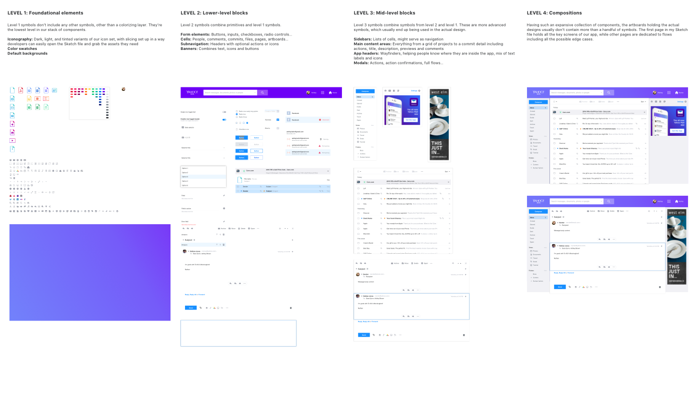
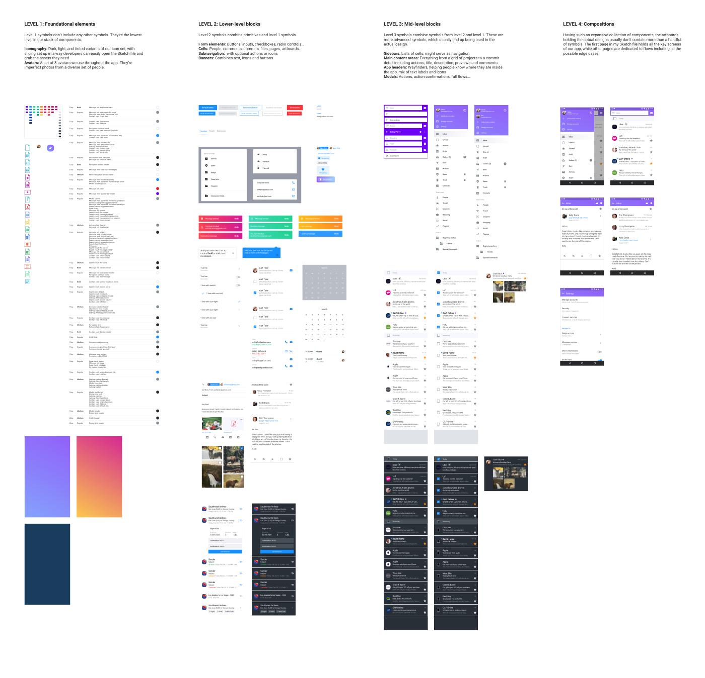
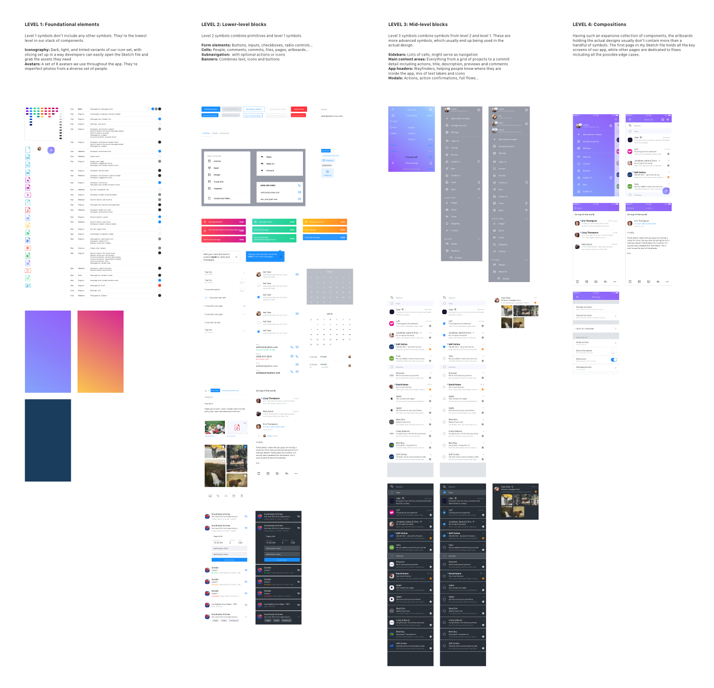
Level 1: Foundational elements
Level 1 symbols don’t include any other symbol(s), and are foundational elements that are more stylistic than they are elemental.
Icons
An icon Symbol is an exception on the inclusion of another Symbol inside of the Level 1 rules, as it will be composed of an icon glyph, set as a Mask, with a Fuji color swatch Symbol to control the color through it's placement on any Artboard.
Level 2: Lower-level blocks
Level 2 Symbols contain one or more Level 1 symbols, and are typically stand-alone UI elements.
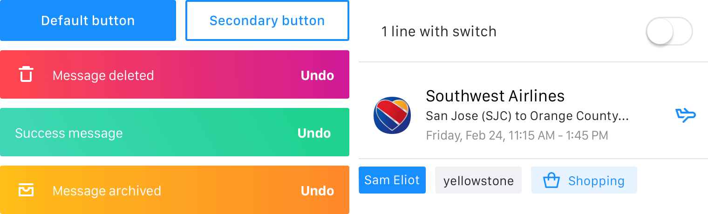
Example:
- Form field elements, such as buttons, inputs, radio buttons
- Cell elements, such as Message list rows
- Navigational elements like the Ybar
- Cards
Level 3: Mid-level blocks
Level 3 Symbols are starting to become complex elements and combine multiple Level 1 and 2 blocks into complex UI views. These are advanced Symbols, which make up large sections of a product page.
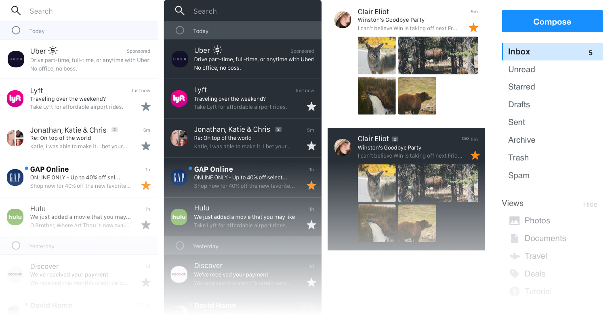
Example:
- Sidebars
- Right rail
- Main content areas, such as a Message list or Conversation
Level 4: Compositions
These are complex and complete Symbols that compose essentially a complete view of a product screen.
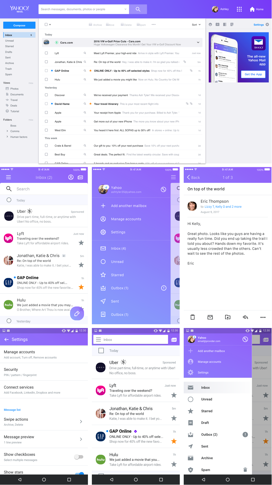
Wireframes and UX
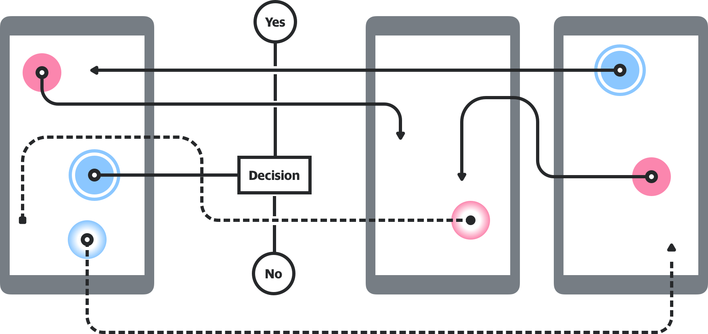
A wireframe and UX library is available for Android and iOS to allow for easy visual communication of ideas to external teams.
How we communicate with external teams
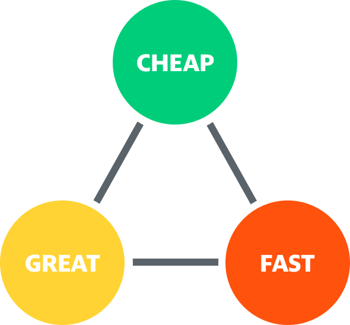
Communications is one of the keys to a consistent product. We communicate our designs and decisions through words and visual images, and at several steps throughout the life-cycle of the design.
We aim to educate external partners to the value of design and the value in understanding the Golden Triangle of Design.
Wireframes and UX flows
When designing and working through what a feature or product will be, we share our thoughts through Google Slides, using the Sync to Slides plug-in. This Google Slide file should be saved inside of the corresponding folder location as the source design file, and named in the same fashion as the source file, with the addition of the platform name.
Using the UX Wireframes Sketch Library will help us create visual walk-throughs that stakeholders can understand without getting trapped by what the visual design will be.
Example:
The Google Slide file for the iOS Contacts list Sketch file should live in the Mail++ / Contacts / iOS folder and be named Contacts list (iOS).
Early iterations of visual design
Early design iterations are treated the same as wireframes and UX flows, and can be shared and commented on in the same fashion, in a Google Slide document.
How we spec our finalized design files
Sketch Measure is our go-to method for delivering finalized specs to our PM and engineering teams. Spec docs live, by product + platform, in a Git pages site, that is accessible to everyone at Yahoo.
Asset delivery
The easiest way of keeping assets in order for our engineering teams and ourselves, is to have a single, unified source of truth for delivered assets. Ideally a single Google Drive folder divided by Product and then Platform, so that everyone has access to existing assets. Team Drives, such as those used by Android and iOS engineering teams, can be used as the source of truth folder as well as the delivery location.
To help partner with an engineering goal of keeping app bundles light, we compress all of our bitmap images using two tools: ImageAlpha and ImageOptim.
GIT workflow
- Join the Git repo
- Clone the product's spec repo to your local machine
- Export specs for a feature from Sketch Measure, into the platform's Git folder
- Add links to and images of your specs to the platform's index page
- Push your changes and sync
- Share the link with Pos and engineers
Example:
Mail++ for iOS
Resources
Sketch Plug-ins
Artboard Tricks plugin
Import Symbols
Library Symbol Replacer
RenameIt
Sketch Measure
Sketch Palettes
Symbol Organizer
Sync to Slides
Files
Fuji Palette
Apps
Colour Contrast Analyser for macOS
Sketchpacks
ImageAlpha
ImageOptim
Font files
San Francisco (iOS, macOS)
Roboto (Android)
Yahoo Sans (Future use, all platforms)
Redacted (Wireframe typeface)
Specs
Mail++ for iOS
Mail++ for Android
Mail for desktop
Mail for mobile web